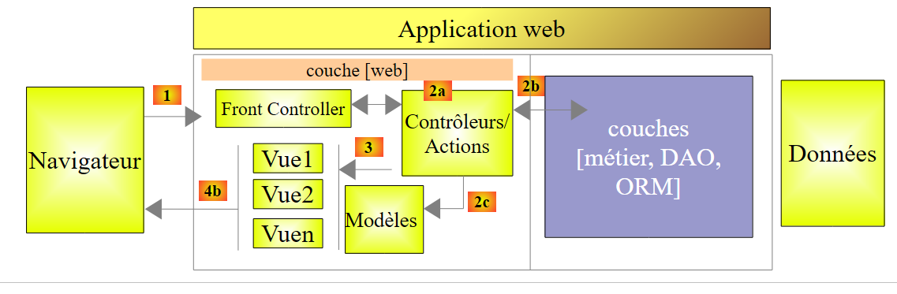
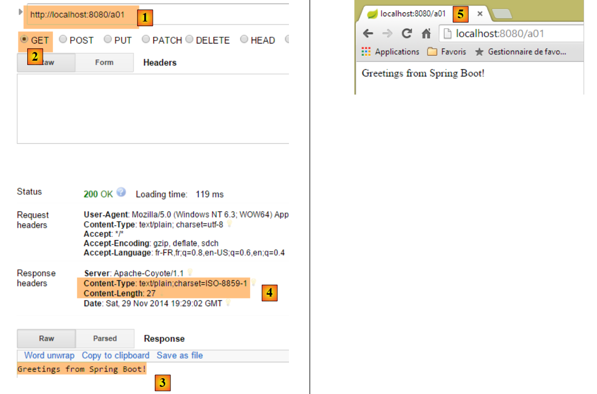
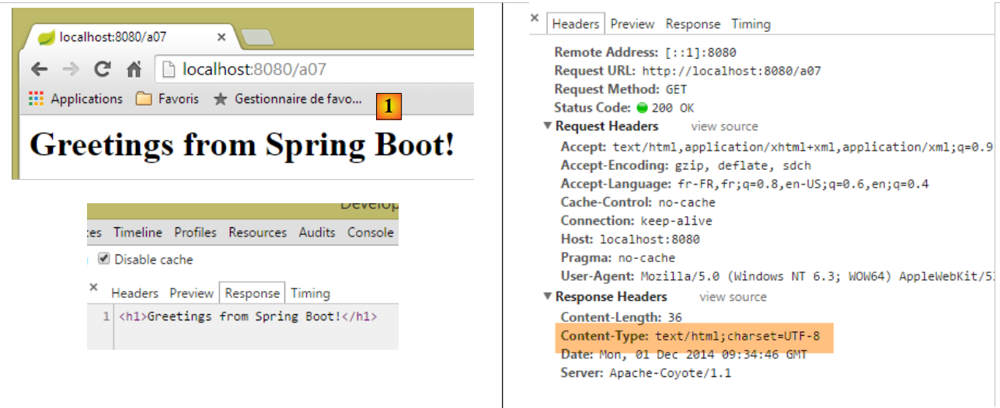
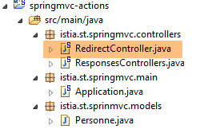
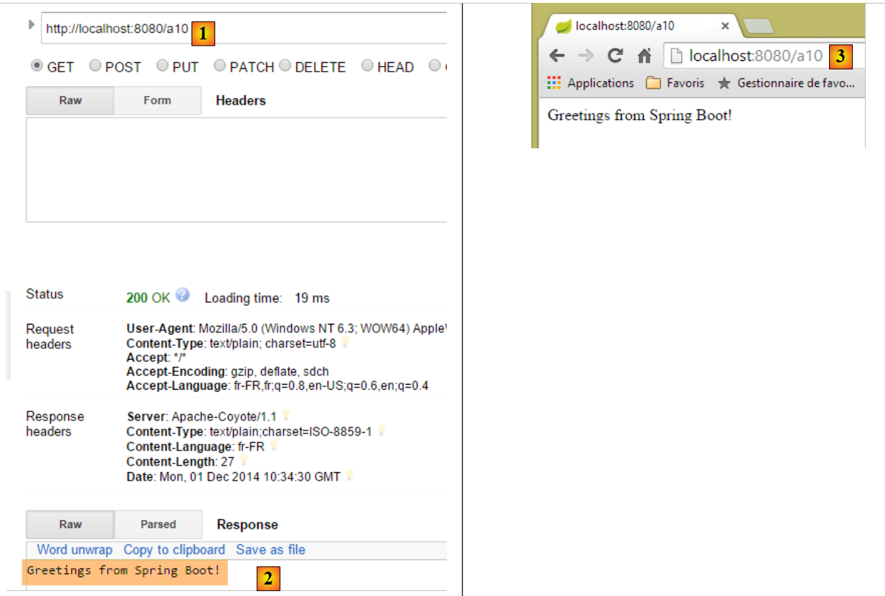

3. 操作：响应
让我们来探讨一下 Spring MVC 应用程序的架构：
 |
在本章中，我们将探讨将请求 [1] 路由到控制器以及负责处理该请求的操作 [2a] 的过程，这一机制被称为路由。我们还将介绍操作可以返回给浏览器的各种响应 [3]。这些响应可能并非 V 视图 [4b]。
3.1. 新项目
我们创建一个新的 Spring MVC 项目：
 |
- 在[1-2]中，我们基于Spring Boot创建了一个新项目；
 |
- 在 [3] 中，Maven 项目的名称；
- 在 [4] 中，项目编译输出将放置的 Maven 组；
- 在 [5] 中，为编译输出指定的名称；
- 在 [6] 中，项目的描述；
- 在 [7] 中，项目可执行类将放置的包；
- 在 [8] 中，指定项目的类型。这是一个使用 Thymeleaf 视图的 Web 项目。在此，我们可以看到 Spring Boot 项目提供的所有即用型 Maven 依赖项；
- 在 [9] 中，我们指定 Maven 构建的输出将打包为 JAR 归档文件而非 WAR。随后，该项目将使用一个嵌入式 Tomcat 服务器，该服务器将被包含在其依赖项中；
- 在 [10] 中，我们进入向导的下一步；
- 在 [11] 中，指定项目目录；
 |
- 在 [12] 中，查看生成的项目；
- 在 [14-15] 中，重命名包 [istia.st.springmvc]；
 |
- 在 [16] 中，输入新包名；
- 在 [17] 中，新项目；
现在我们创建一个新类；
 |
- 在 [1-3] 中，我们创建一个新类；
 |
- 在 [5] 中为其命名，并在 [4] 中指定其包；
- 在 [6] 中，新建项目；
该类目前如下所示：
package istia.st.springmvc;
public class ActionsController {
}
我们将按以下方式更新此代码：
package istia.st.springmvc;
import org.springframework.web.bind.annotation.RestController;
@RestController
public class ActionsController {
}
- 第 6 行：[@RestController] 注解表明了两点：
- 标注了该 [ActionsController] 类的 Spring MVC 控制器，因此包含处理客户端 URL 的操作；
- 这些操作的结果会被发送给客户端；
我们遇到的另一个注解 [@Controller] 则有所不同：带有此注解的控制器中的操作会返回应显示的视图名称。随后，该视图与操作为该视图构建的模型相结合，共同构成发送给客户端的响应。
项目结构的变更需要相应调整项目配置：
 |
[Application] 类的演变过程如下：
package istia.st.springmvc.main;
import org.springframework.boot.SpringApplication;
import org.springframework.boot.autoconfigure.EnableAutoConfiguration;
import org.springframework.context.annotation.ComponentScan;
import org.springframework.context.annotation.Configuration;
@Configuration
@ComponentScan({"istia.st.springmvc.controllers"})
@EnableAutoConfiguration
public class Application {
public static void main(String[] args) {
SpringApplication.run(Application.class, args);
}
}
- 第 9 行：[ComponentScan] 注解的参数是一个包名数组，Spring Boot 将在此数组中查找 Spring 组件。在此，我们将包 [istia.st.springmvc.controllers] 加入该数组，以便能够找到带有 [@RestController] 注解的控制器；
我们将在此控制器中创建各种操作方法，以演示其主要功能。首先，我们将重点探讨在没有视图的应用程序中，操作方法可能返回的各种响应类型。
3.2. [/a01, /a02] - Hello world
我们的第一个操作如下：
@RestController
public class ActionsController {
// ----------------------- hello world ------------------------
@RequestMapping(value = "/a01", method = RequestMethod.GET)
public String a01() {
return "Greetings from Spring Boot!";
}
}
- 第 4 行：[RequestMapping] 注解指定了被注解的操作所处理的请求：
- [value] 属性表示正在处理的 URL，
- [method] 属性指定接受的方法；
因此，方法 [a01] 处理 HTTP 请求 [GET /a01]。
- 第 5 行：[a01] 方法返回 [String] 类型，该值将原样发送给客户端；
- 第 6 行：返回的字符串；
让我们像之前多次做过的那样运行应用程序，然后使用 [Advanced Rest Client]，通过 GET 方法 [1-2] 请求 URL [/a01]：
 |
- 在 [3] 中，显示了服务器的响应；
- 在 [4] 中，是响应的 HTTP 头部。我们可以看到所使用的编码是 [ISO-8859-1]。我们可能更倾向于使用 UTF-8 编码。这可以通过配置进行调整；
- 在 [5] 中，我们使用 Chrome 浏览器请求相同的 URL；
我们在 [ActionsController] 中添加以下操作 [/a02]（有时我们会将 URL 与处理它的方法混淆，该方法被称为操作）：
// ----------------------- accented characters - UTF8 ------------------------
@RequestMapping(value = "/a02", method = RequestMethod.GET, produces="text/plain;charset=UTF-8")
public String a02() {
return "caractères accentués : éèàôûî";
}
- 第 2 行：属性 [produces="text/plain;charset=UTF-8"] 表示该操作发送的文本流中的字符采用 [UTF-8] 格式编码。该格式特别允许使用带重音的字符；
要应用此新操作，我们必须重启应用程序：
 |
结果如下：
 |
- 在[1]中，我们可以看到服务器发送的文档类型；
- 在[2-3]中，带重音的字符清晰可见；
3.3. [/a03]：返回一个 XML 流
我们添加以下 [/a03] 操作：
// ----------------------- text/xml ------------------------
@RequestMapping(value = "/a03", method = RequestMethod.GET, produces = "text/xml;charset=UTF-8")
public String a03() {
String greeting = "<greetings><greeting>Greetings from Spring Boot!</greeting></greetings>";
return greeting;
}
- 第 2 行：[produces="text/xml;charset=UTF-8"] 属性表示该操作发送的 XML 流采用 [UTF-8] 格式编码；
执行后得到以下结果：
 |
- 在[1]中，HTTP头字段指定发送的文档是HTML；
- 在[2]中，Chrome浏览器利用此信息对接收到的XML文本进行格式化；
请记住，在 Chrome 中，您可以在开发者控制台（Ctrl-Shift-I）中查看客户端与服务器之间的 HTTP 交互：

从现在起，我们将不再系统性地截取客户端与服务器之间 HTTP 交互的屏幕截图。有时，我们会直接引用这些交互的文本内容。
3.4. [/a04, /a05]：返回 JSON 数据流
我们添加以下 [/a04] 操作：
// ----------------------- produce from jSON ------------------------
@RequestMapping(value = "/a04", method = RequestMethod.GET)
public Map<String, Object> a04() {
Map<String, Object> map = new HashMap<String, Object>();
map.put("1", "un");
map.put("2", new int[] { 4, 5 });
return map;
}
- 第 3 行：该操作返回 [Map] 类型，即字典。请注意，对于带有 [@RestController] 注解的控制器，操作的结果就是发送给客户端的响应。由于 HTTP 是一种用于交换文本行的协议，因此客户端的响应必须被序列化为字符串。为此，Spring MVC 使用了各种 [Object <---> string] 转换器。 特定对象与转换器的关联是通过配置实现的。在此，Spring Boot 的自动配置会检查项目的依赖项：
 |
上述列出的 Jackson 依赖项是用于将对象序列化和反序列化为 JSON 字符串的库。Spring Boot 将使用这些库对操作返回的对象进行序列化和反序列化。关于将 Java 对象序列化和反序列化为 JSON 的 Java 代码示例，请参见第 9.7 节。
请注意第 2 行，我们并未指定要发送的响应类型。我们将看到系统会发送的默认类型。
Chrome 中的结果如下 [1-3]：
 |
现在让我们添加以下操作 [/a05]：
// ----------------------- produce from jSON - 2 ------------------------
@RequestMapping(value = "/a05", method = RequestMethod.GET)
public Personne a05() {
return new Personne(1,"carole",45);
}
[Person] 类如下所示：
 |
package istia.st.sprinmvc.models;
public class Personne {
// identifier
private Integer id;
// name
private String nom;
// age
private int age;
// manufacturers
public Personne() {
}
public Personne(String nom, int age) {
this.nom = nom;
this.age = age;
}
public Personne(Integer id, String nom, int age) {
this(nom, age);
this.id = id;
}
@Override
public String toString() {
return String.format("[id=%s, nom=%s, age=%d]", id, nom, age);
}
// getters and setters
...
}
执行结果如下：
 |
- 在 [1] 中，服务器表明其发送的文档是 JSON；
- 在 [2] 中，接收到的 JSON 文档；
3.5. [/a06]：返回一个空流
我们添加以下 [/a06] 操作：
// ----------------------- render an empty stream ------------------------
@RequestMapping(value = "/a06")
public void a06() {
}
- 在第 3 行，[/a06] 操作未返回任何内容。Spring MVC 随后会向客户端生成一个空响应；
执行结果如下：
 |
上文中的响应 HTTP [Content-Length] 属性表明服务器正在发送一个空文档。
3.6. [/a07, /a08, /a09]: 带有 [Content-Type] 的数据类型
我们添加以下操作 [/a07]：
// ----------------------- text/html ------------------------
@RequestMapping(value = "/a07", method = RequestMethod.GET, produces = "text/html;charset=UTF-8")
public String a07() {
String greeting = "<h1>Greetings from Spring Boot!</h1>";
return greeting;
}
- 第 2 行：[/a07] 操作返回一个 HTML 流 [text/html]；
- 第 4 行：一个 HTML 字符串；
执行结果如下：
 |
- 在[1]中，我们可以看到Chrome已解析了HTML标签<h1>，并以大号字体显示其内容；
现在，让我们使用以下 [/a08] 操作来实现相同的效果：
// ----------------------- result HTML in text/plain ------------------------
@RequestMapping(value = "/a08", method = RequestMethod.GET, produces = "text/plain;charset=UTF-8")
public String a08() {
String greeting = "<h1>Greetings from Spring Boot!</h1>";
return greeting;
}
- 第 2 行：该操作的响应类型为 [text/plain]；
结果如下：
 |
- 在[1]中，Chrome 未解析 HTML 标签 <h1>，因为服务器告知其正在发送 [text/plain] 流 [2]；
让我们尝试使用以下 [/a09] 操作进行类似的测试：
// ----------------------- result HTML in text/xml ------------------------
@RequestMapping(value = "/a09", method = RequestMethod.GET, produces = "text/xml;charset=UTF-8")
public String a09() {
String greeting = "<h1>Greetings from Spring Boot!</h1>";
return greeting;
}
- 第 2 行：我们发送一个 [text/xml] 流；
结果如下：
 |
- 在[1]中，Chrome 未解析 HTML 标签 <h1>，因为服务器告知其正在发送 [text/xml] 流 [2]。随后，它将 <h1> 标签视为 XML 标签；
这些示例突显了服务器响应中 [Content-Type] HTTP 头的重要性。浏览器会利用该头来确定如何解析收到的文档；
3.7. [/a10, /a11, /a12]：重定向客户端
我们创建一个新的控制器 [RedirectController]：
 |
目前 [RedirectController] 的代码如下：
package istia.st.springmvc.controllers;
import org.springframework.stereotype.Controller;
import org.springframework.web.bind.annotation.RequestMapping;
import org.springframework.web.bind.annotation.RequestMethod;
@Controller
public class RedirectController {
}
- 第 7 行：我们使用了 [@Controller] 注解，这意味着默认情况下，操作结果的 [String] 类型现在指的是操作或视图的名称；
我们创建以下 [/a10] 操作：
// ------------ bridge to third-party action -----------------------
@RequestMapping(value = "/a10", method = RequestMethod.GET)
public String a10() {
return "a01";
}
- 第 4 行：我们将 'a01' 作为结果返回，这是某个操作的名称。该操作随后会将响应发送给客户端；
以下是一个示例：
 |
- 在 [2] 中，我们接收到了来自操作 [/a01] 的数据流；
- 在 [3] 中，浏览器显示了操作 [/a10] 的 URL；
现在我们创建以下操作 [/a11]：
// ------------ temporary 302 redirect to a third-party action -----------------------
@RequestMapping(value = "/a11", method = RequestMethod.GET)
public String a11() {
return "redirect:/a01";
}
我们得到以下结果：
 |
- 在 Chrome 日志 [1-2] 中，我们看到两个请求，一个指向 [/a11]，另一个指向 [/a01]；
- 在 [3] 中，服务器返回 [302] 状态码，该状态码指示客户端浏览器重定向至 HTTP [Location:] 头部指定的 URL [4]。[302] 状态码是一种临时重定向代码；
随后，浏览器向重定向 URL 发出第二次请求：
 |
- 在 [5] 中，客户端的第二次请求；
- 在 [6] 中，客户端浏览器显示重定向请求的 URL；
您可能希望表示永久重定向，在这种情况下，必须向客户端发送以下 HTTP 头：
这意味着重定向是永久性的。某些搜索引擎会将临时重定向（302）与永久重定向（301）之间的区别纳入考量。
我们编写执行此永久重定向的操作 [/a12]：
// ------------ permanent 301 redirect to a third-party action----------------
@RequestMapping(value = "/a12", method = RequestMethod.GET)
public void a12(HttpServletResponse response) {
response.setStatus(301);
response.addHeader("Location", "/a01");
}
- 第 3 行：我们请求 Spring MVC 注入 [HttpServletResponse] 对象，该对象封装了发送给客户端的响应；
- 第 4 行：我们设置响应的 [status]，即 [301] HTTP 状态码：
- 第 5 行：我们手动创建以下 HTTP 头：
这是重定向的 URL。
执行后得到以下结果：
 |  |
通过这个示例，我们将学习如何：
- 生成 HTTP 响应状态；
- 在响应中包含 HTTP 头部；
3.8. [/a13]: 生成完整的响应
我们可以完全控制响应，如下所示，[ResponsesController] 类中的以下操作便体现了这一点：
 |
// ----------------------- complete response generation ------------------------
@RequestMapping(value = "/a13")
public void a13(HttpServletResponse response) throws IOException {
response.setStatus(666);
response.addHeader("header1", "qq chose");
response.addHeader("Content-Type", "text/html;charset=UTF-8");
String greeting = "<h1>Greetings from Spring Boot!</h1>";
response.getWriter().write(greeting);
}
- 第 3 行：该操作的结果为 [void]。在这种情况下，若要向客户端发送非空响应，必须使用 Spring MVC 提供的 [HttpServletResponse response] 对象；
- 第 4 行：我们为响应分配了一个状态码，该状态码不会被客户端识别；
- 第 5 行：我们添加了一个客户端无法识别的 HTTP 头部；
- 第 6 行：我们添加了一个 [Content-Type] HTTP 头，用于指定所发送的数据类型，本例中为 HTML；
- 第 7–8 行：响应中紧随 HTTP 头之后的内容；
结果如下：
 |
- 在[1]中，我们识别出了响应中的元素；
- 在 [2-3] 中，我们看到 Chrome 忽略了以下事实：
- 响应的 HTTP 状态并非已识别的 HTTP 状态，
- 且 [header1] 头部并非被识别的 HTTP 头部；
如果客户端不是浏览器而是程序化客户端，您可以自由使用任何状态码和标头。